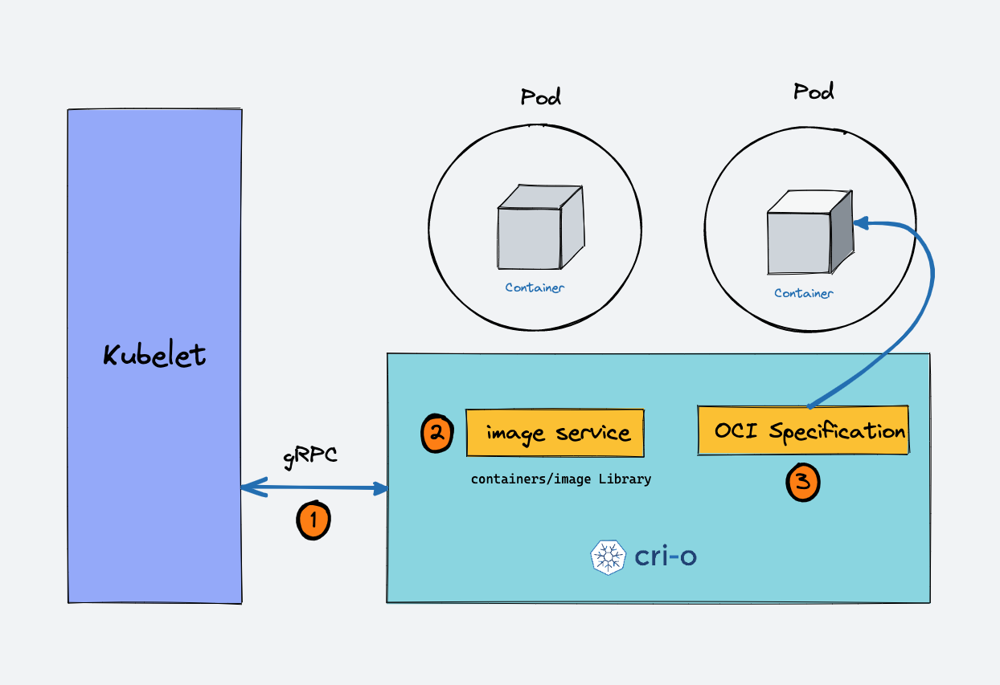
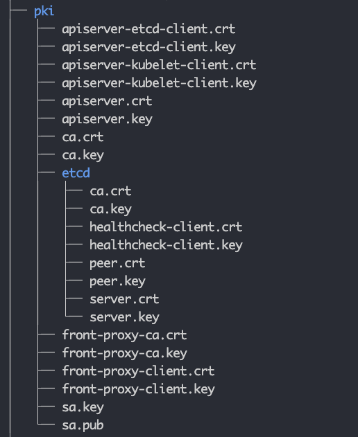

Part 1
Topics
- Kubernetes Overview
- Kubernetes Architecture
- Kubernetes Components
- Kubernetes Installation
- Kubernetes SSL Certificates
- Kubernetes Static Pods
- Kubernetes Configuration files
- Kubernetes Upgrade
- Etcd backup and restore
- Kubernetes Node related commands
- CIS Benchmark
Kubernetes Overview
Kubernetes or k8s is an open-source orchestration and cluster management for container-based applications maintained by the Cloud Native Computing Foundation. Kubernetes is an open-source system for automating deployment, scaling, and management of containerized applications. It groups containers that make up an application into logical units for easy management and discovery
Kubernetes Architecture & Components
- Managed Kubernetes Cluster (We do not have on control Plane) e.g
- AKS on Azure Cloud
- EKS on AWS cloud
- GKE on Google Cloud
- Self Managed kubernetes Cluster (Installed on VMs)
Kubernetes has two type of nodes
- Master Nodes (Control Plane)
- Worker Nodes
Control Plane
The control plane is responsible for container orchestration and maintaining the desired state of the cluster. It has the following components.
- kube-apiserver
- etcd
- kube-scheduler
- kube-controller-manager
- cloud-controller-manager
Worker Node
The Worker nodes are responsible for running containerized applications. The worker Node has the following components.
- kubelet
- kube-proxy
- Container runtime
Control Plane Components:
kube-apiserver
- The kube-api server is the central hub of the Kubernetes cluster that exposes the Kubernetes API.
- End users, and other cluster components, talk to the cluster via the API server.
- So when you use kubectl to manage the cluster, at the backend you are actually communicating with the API server through HTTP REST APIs.
- The communication between the API server and other components in the cluster happens over TLS to prevent unauthorized access to the cluster.
- It is the only component that communicates with etcd.
etcd
- etcd is an open-source strongly consistent, distributed key-value store.
- etcd is designed to run on multiple nodes as a cluster without sacrificing consistency.
- etcd stores all configurations, states, and metadata of Kubernetes objects (pods, secrets, daemonsets, deployments, configmaps, statefulsets, etc).
- etcd it is the only Statefulset component in the control plane.
- Only kube-apiserver can talk to etcd.
kube-scheduler:
- The kube-scheduler is responsible for scheduling Kubernetes pods on worker nodes.
- It is a controller that listens to pod creation events in the API server.
- The scheduler has two phases. Scheduling cycle and the Binding cycle. Together it is called the scheduling context. The scheduling cycle selects a worker node and the binding cycle applies that change to the cluster.
Kube Controller Manager
- Controllers are programs that run infinite control loops. Meaning it runs continuously and watches the actual and desired state of objects.
- Kube controller manager is a component that manages all the Kubernetes controllers. Kubernetes resources/objects like pods, namespaces, jobs, replicaset are managed by respective controllers.
- the Kube scheduler is also a controller managed by the Kube controller manager.
built-in Kubernetes controllers.
- Deployment controller
- Replicaset controller
- DaemonSet controller
- Job Controller (Kubernetes Jobs)
- CronJob Controller
- endpoints controller
- namespace controller
- service accounts controller.
- Node controller
Cloud Controller Manager (CCM)
-
When kubernetes is deployed in cloud environments, the cloud controller manager acts as a bridge between Cloud Platform APIs and the Kubernetes cluster.
-
Cloud controller integration allows Kubernetes cluster to provision cloud resources like instances (for nodes), Load Balancers (for services), and Storage Volumes (for persistent volumes).
3 main controllers that are part of the cloud controller manager.
-
Node controller: This controller updates node-related information by talking to the cloud provider API. For example, node labeling & annotation, getting hostname, CPU & memory availability, nodes health, etc.
-
Route controller: It is responsible for configuring networking routes on a cloud platform. So that pods in different nodes can talk to each other.
-
Service controller: It takes care of deploying load balancers for kubernetes services, assigning IP addresses, etc.

Kubernetes Worker Node Components
Kubelet
- Kubelet is an agent component that runs on every node in the cluster.
- It does not run as a container instead runs as a daemon, managed by systemd.
- It is responsible for registering worker nodes with the API server.
- It then brings the podSpec to the desired state by creating containers.
- Creating, modifying, and deleting containers for the pod.
- Responsible for handling liveliness, readiness, and startup probes. Responsible for Mounting volumes by reading pod configuration and creating respective directories on the host for the volume mount.
- Kubelet is also a controller that watches for pod changes and utilizes the node’s container runtime to pull images, run containers, etc.
- Static pods are controlled by kubelet, not the API servers.
- Static pods from podSpecs located at /etc/kubernetes/manifests

Kube proxy
- Kube-Proxy is a network proxy that runs on each node in a Kubernetes cluster.
- It is responsible for maintaining network connectivity between services and pods.
- Kube-Proxy does this by translating service definitions into actionable networking rules.
- Kube-proxy uses iptables as a default mode.
Container Runtime
-
Container runtime runs on all the nodes in the Kubernetes cluster. It is responsible for pulling images from container registries, running containers, allocating and isolating resources for containers, and managing the entire lifecycle of a container on a host.
-
Kubernetes supports multiple container runtimes (CRI-O, Docker Engine, containerd, etc) that are compliant with Container Runtime Interface (CRI). This means, all these container runtimes implement the CRI interface and expose gRPC CRI APIs (runtime and image service endpoints). 
-
When there is a new request for a pod from the API server, the kubelet talks to CRI-O daemon to launch the required containers via Kubernetes Container Runtime Interface.
-
CRI-O checks and pulls the required container image from the configured container registry using containers/image library.
-
CRI-O then generates OCI runtime specification (JSON) for a container.
-
CRI-O then launches an OCI-compatible runtime (runc) to start the container process as per the runtime specification.
Kubernetes Cluster Addon Components
- CNI Plugin (Container Network Interface)
- CoreDNS (For DNS server): CoreDNS acts as a DNS server within the Kubernetes cluster. By enabling this addon, you can enable DNS-based service discovery.
- Metrics Server (For Resource Metrics): This addon helps you collect performance data and resource usage of Nodes and pods in the cluster.
- Web UI (Kubernetes Dashboard): This addon enables the Kubernetes dashboard to manage the object via web UI.
Virual Machine setup for Kubernetes Installation.
Prerequisites
- Virtualbox installed on Windows vm.
- Internet connectivity has to be there.
- Vscode should be installed
- Gitbash should also be available on Windows machine
Create two VMS using vagrant on virtualbox
- Create a folder in Windows OS
- Open folder in vscode
- Open Terminal in vscode and run the below commands
git clone https://gitlab.com/container-and-kubernetes/kubernetes-2024.git
cd kubernetes-2024/two-vms
vagrant up- Check your virtualbox and see if you have two vms (kmaster & kworker1) with below ips
kmaster: 172.16.16.100
kworker1: 172.16.16.101- Try to login to each vms using the command below usinf vscode terminal
ssh vagrant@172.16.16.100
ssh vagrant@172.16.16.101Kubernetes Cluster Setup Documentation
Documentation Link:
https://kubernetes.io/docs/setup/production-environment/tools/kubeadm/install-kubeadm/
Installation of kubeadm ,kubelet etc will be done on master and worker nodes.
Setup containerd
Prerequisites
-
A compatible Linux host.
-
2 GB or more of RAM per machine (any less will leave little room for your apps).
-
2 CPUs or more.
-
Full network connectivity between all machines in the cluster (public or private network is fine).
-
Unique hostname, MAC address, and product_uuid for every node. See here for more details.
-
Certain ports are open on your machines. See here for more details.
-
Swap configuration. The default behavior of a kubelet was to fail to start if swap memory was detected on a node.
-
Verify the MAC address and product_uuid are unique for every node
ip link
ip addr show
ifconfig -a
sudo cat /sys/class/dmi/id/product_uuid- Check Required Ports
nc 127.0.0.1 6443- Disable swap
sudo swapoff -a
sudo sed -i '/ swap / s/^\(.*\)$/#\1/g' /etc/fstabInstalling a container runtime
-
To run containers in Pods, Kubernetes uses a container runtime.
-
By default, Kubernetes uses the Container Runtime Interface (CRI) to interface with your chosen container runtime.
-
If you don’t specify a runtime, kubeadm automatically tries to detect an installed container runtime by scanning through a list of known endpoints.
-
If multiple or no container runtimes are detected kubeadm will throw an error and will request that you specify which one you want to use.
-
The tables below include the known endpoints for supported operating systems:
-
Runtime Path to Unix domain socket
Container Runtime Socket containerd unix:///var/run/containerd/containerd.sock CRI-O unix:///var/run/crio/crio.sock Docker Engine (cri-dockerd) unix:///var/run/cri-dockerd.sock
Install containerd
apt update -y
apt-get install -y containerd
mkdir -p /etc/containerd
containerd config default > /etc/containerd/config.tomlUpdate SystemdCgroup Settings
sed -i 's/SystemdCgroup \= false/SystemdCgroup \= true/g' /etc/containerd/config.tomlRestart containerd
systemctl restart containerdKernel Parameter Configuration
- Forwarding IPv4 and letting iptables see bridged traffic
cat <<EOF | sudo tee /etc/modules-load.d/k8s.conf
overlay
br_netfilter
EOF
sudo modprobe overlay
sudo modprobe br_netfilter- sysctl params required by setup, params persist across reboots
cat <<EOF | sudo tee /etc/sysctl.d/k8s.conf
net.bridge.bridge-nf-call-iptables = 1
net.bridge.bridge-nf-call-ip6tables = 1
net.ipv4.ip_forward = 1
EOF- Apply sysctl params without reboot
sudo sysctl --systemInstalling kubeadm, kubelet and kubectl
sudo apt-get update
sudo apt-get install -y apt-transport-https ca-certificates curl
sudo curl -fsSL https://packages.cloud.google.com/apt/doc/apt-key.gpg | sudo gpg --dearmor -o /etc/apt/keyrings/kubernetes-archive-keyring.gpg
echo "deb [signed-by=/etc/apt/keyrings/kubernetes-archive-keyring.gpg] https://apt.kubernetes.io/ kubernetes-xenial main" | sudo tee /etc/apt/sources.list.d/kubernetes.list
sudo apt-get update
apt-cache madison kubeadm
sudo apt-get install -y kubelet=1.24.0-00 kubeadm=1.24.0-00 kubectl=1.24.0-00 cri-tools=1.24.2-00
sudo apt-mark hold kubelet kubeadm kubectlInitialize Cluster with kubeadm (Only master node)
kubeadm init --pod-network-cidr=10.244.0.0/16 --kubernetes-version=1.24.0 --apiserver-advertise-address=172.16.16.100Execute the below command to run kubectl commands as you will require kubeconfig file to connect to kubernetes cluster
mkdir -p $HOME/.kube
sudo cp -i /etc/kubernetes/admin.conf $HOME/.kube/config
sudo chown $(id -u):$(id -g) $HOME/.kube/configClick Here to know more about kubeconfig
Check nodes status
kubectl get nodesInstall Network Addon (flannel) (master node)
kubectl apply -f https://raw.githubusercontent.com/coreos/flannel/master/Documentation/kube-flannel.ymlConnect Worker Node (Only worker node)
kubeadm join 172.16.16.100:6443 --token qmw5dj.ljdh8r74ce3y85ad \
--discovery-token-ca-cert-hash sha256:83374ec05088fa7efe9c31cce63326ae7037210ab049048ef08f8c961a048ddfVerification
- check node status
kubectl get nodes- run a pod
kubectl run nginx --image=nginx- check running pod
kubectl get pods -o wideKubernetes Cluster Configurations
- Static Pod Manifests: /etc/kubernetes/manifests
/etc/kubernetes/manifests
├── etcd.yaml
├── kube-apiserver.yaml
├── kube-controller-manager.yaml
└── kube-scheduler.yaml-
TLS Certificates All the components talk to each other over mTLS. Under the PKI folder, you will find all the TLS certificates and keys 
-
Kubeconfig Files
-
Any components that need to authenticate to the API server need the kubeconfig file.
-
All the cluster Kubeconfig files are present in the /etc/kubernetes folder (.conf files). You will find the following files.
- admin.conf
- controller-manager.conf
- kubelet.conf
- scheduler.conf
-
It contains the API server endpoint, cluster CA certificate, cluster client certificate, and other information.
-
The admin.conf, file, which is the admin kubeconfig file used by end users to access the API server to manage the clusters.
-
The Kubeconfig for the Controller manager controller-manager.conf, scheduler, and Kubelet is used for API server authentication and authorization.
Kubelet Configurations
kubelet kubeconfig file: /etc/kubernetes/kubelet.conf
kubelet config file: /var/lib/kubelet/config.yaml
EnvironmentFile=-/var/lib/kubelet/kubeadm-flags.env- The /var/lib/kubelet/config.yaml contains all the kubelet-related configurations. The static pod manifest location is added as part of the staticPodPath parameter. /var/lib/kubelet/kubeadm-flags.env file contains the container runtime environment Linux socket and the infra container (pause container) image.
- CoreDNS Configurations
kubectl get configmap --namespace=kube-systemNode Related commands
- Check all nodes which are the part of kubernetes cluster
kubectl get nodes- Cordon a node (prevent new pods from being scheduled)
kubectl cordon <node-name>- Uncordon a node (allow new pods to be scheduled):
kubectl uncordon <node-name>- Drain a node (evacuate all pods, reschedule them elsewhere)
kubectl drain <node-name>- Sort Nodes by CPU Capacity
kubectl get nodes --sort-by=.status.capacity.cpu- Sort by memory
kubectl get nodes --sort-by=.status.capacity.memory- How to label a node
kubectl label node <nodename> key=value- check nodes with label
kubectl get nodes -l key=value- check the nodes which does not label key=value
kubectl get nodes key!=value- Check detailed information about a node
kubectl get nodes -o wideUpgrade Kubeadm Cluster
-
Before upgrade kubernetes cluster Do not forgot to study kubernetes release
-
Check the release notes before you upgrade your kubernetes cluster
-
Also drain a node and uncordon after the upgrade is successful
-
Check the upgrade plan using below commands
kubeadm upgrade plan
kubectl -n kube-system get cm kubeadm-config -o yaml- Check the kubeadm version available
apt-cache madison kubeadm- Unhold the packages to be upgraded
apt-mark unhold kubelet kubectl kubeadm- Upgrade the available packages
apt-get update && apt-get install -y kubelet=1.25.0-00 kubectl=1.25.0-00 kubeadm=1.25.0-00 - Lock again the below packages
apt-mark hold kubelet kubectl- Check new kubeadm version
kubeadm version- Upgrade the kubernetes cluster
kubeadm upgrade apply 1.25.0- Restart the services
systemctl daemon-reload
systemctl restart kubelet- Check the kubernetes version
kubectl versionKubens & Kubectx
- Login to master node and run the command there
Install Kubens to switch from one namespace to another
wget https://raw.githubusercontent.com/ahmetb/kubectx/master/kubens
chmod +x kubens
cp kubens /binInstall kubectx to switch from one Kubernetes cluster to another
wget https://raw.githubusercontent.com/ahmetb/kubectx/master/kubectx
chmod +x kubectx
cp kubectx /binKubernetes Initial commands for cluster verification
- How to check nodes in cluster
kubectl get nodes- Cluster api info
kubectl api-resources- Cluster info
kubect cluster-info- Kubernetes nodes information
kubectl describe nodes <nodename>- Update worker node role as a worker
kubectl label node <node-name> kubernetes.io/role=worker- Make a test after creating one pod
kubectl run mypod --image=nginx- Check newly created pod
kubectl get podsInstall kubernetes Cluster Automatically
git clone https://gitlab.com/container-and-kubernetes/kubernetes-2024.git
cd kubernetes-2024/
cd kubernetes-with-vagrant/
vagrant upCommon Kubeadm Commands
- kubeadm init (initialize kubernetes)
kubeadm init --pod-network-cidr=192.168.0.0/16- kubeadm join (To join a worker node)
kubeadm join <master-node-ip>:<master-node-port> --token <token> --discovery-token-ca-cert-hash <hash>- kubeadm reset( removing all installed Kubernetes components and returning it to its pre-Kubernetes state. )
kubeadm reset --force- kubeadm upgrade (check available upgrades)
kubeadm upgrade plan- kubeadm token (Token management)
kubeadm token create- Print Token along with command
kubeadm token create --print-join-command- kubeadm token list (Check all token along with expiration date)
kubeadm token list- kubeadm token delete
kubeadm token delete <token_value>- kubeadm config migrate
kubeadm config migrate --old-config kubeadm.conf --new-config kubeadm.yaml- kubeadm config (Print default config files)
kubeadm config print init-defaults- kubeadm config images(List all required images)
kubeadm config images list- kubeadm certs(Check certificate status)
kubeadm certs check-expiration
kubeadm certs certificate-key- kubeadm upgrade node(upgrades the kubelet and kube-proxy on a worker node to match the control plane’s version.)
kubeadm upgrade nodeWhat is a Kubeconfig file?
- A Kubeconfig is a YAML file with all the Kubernetes cluster details, certificates, and secret tokens to authenticate the cluster.
- You might get this config file directly from the cluster administrator or from a cloud platform if you are using a managed Kubernetes cluster.
- When you use kubectl, it uses the information in the kubeconfig file to connect to the kubernetes cluster API. The default location of the Kubeconfig file is $HOME/.kube/config
- Example Kubeconfig File
- certificate-authority-data: Cluster CA
- server: Cluster endpoint (IP/DNS of the master node)
- name: Cluster name
- user: name of the user/service account.
- token: Secret token of the user/service account.
apiVersion: v1
clusters:
- cluster:
certificate-authority-data: <ca-data-here>
server: https://your-k8s-cluster.com
name: <cluster-name>
contexts:
- context:
cluster: <cluster-name>
user: <cluster-name-user>
name: <cluster-name>
current-context: <cluster-name>
kind: Config
preferences: {}
users:
- name: <cluster-name-user>
user:
token: <secret-token-here>- List all cluster contexts
kubectl config get-contexts -o=name- Set the current context
kubectl config use-context <cluster-name> - Using Environment variable (KUBECONFIG)
export KUBECONFIG=<kubeconfig filename>- Using Kubeconfig File With Kubectl
kubectl get nodes --kubeconfig=<filepath>- How to merge multiple kubeconfig into one
KUBECONFIG=config:dev_config:test_config kubectl config view --merge --flatten > config.new